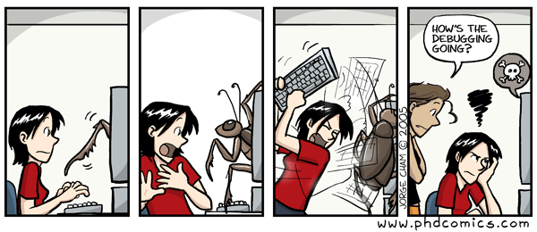

Recherche d’erreurs
Contenu
13. Recherche d’erreurs¶
{kind=link}
d’après le site http://phdcomics.com/comics.php
%matplotlib inline
from IPython.core.display import HTML,display
13.1. Historique¶
Un bug informatique ou bogue est communément attribué au tout premier incident informatique qui a été causé par un insecte lors du développement du système informatique électromécanique à lampes Harvard Mark II en 1945.
{kind=link}

Cependant, le terme bug était déja utiliser pour désigner un défaut de conception depuis Thomas Edison en 1878.
13.2. Méthodologie¶
(voir aussi le cours MIT 6.00 « Introduction to computer science and programming » )
Les erreurs dans un programme (bogues ou bugs) sont introduites par le programmeur:
erreur de syntaxe
erreur de programmation
erreur algorithmique
13.2.1. objectifs du debugging¶
essayer d’obtenir un programme avec le moins d’erreurs possible (bug-free program)
et non pas éliminer rapidement une erreur
le debugging est très fortement associé à la validation
Dans le développement d’applications, la partie debugging et validation représente la part la plus importante.
13.2.2. démarche du debugging¶
démarche systématique basée sur la logique
outils d’aide au debugging = debugger OK
mais ce qui est le plus important est la méthode, plus que l’outil !
outil simple et efficace= insertion de print dans le code
13.2.3. méthode¶
recherche de bugs par dichotomie (binary search)
avec pour objectif non pas de trouver pourquoi le programme ne donne pas le bon résultat, mais de comprendre pourquoi le programme fonctionne de cette façon pour ensuite le corriger.
approche scientifique:
on fait une hypothèse
on choisit des données, et on fait des expériences numériques reproductibles pour tenter d’invalider l’hypothèse
raisonnement par dichotomie
hypothèse: telle partie du programme donne le résultat attendu
insertion de print pour tester l’hypothèse
13.3. Exemple de debugging¶
Voici un programme qui teste si la représentation base 2 d’un entier est un palindrome.
exemple:
n=9 en base 2 s’écrit 1001 et est donc un palindrome
n=12 en base 2 s’écrit 1100 et n’est pas un palindrome
13.3.1. principe de l’algorithme¶
n entier positif
conversion de n en base 2 sous forme d'une liste de 0 et 1
éléments de la liste = reste division successive de n par 2
test si la liste est un palindrome
comparaison avec la liste inversée
13.3.2. programme avec des bugs !!¶
# digit en base 2
digit=['0','1']
def base2(n):
"""conversion base 2 d'un nombre n"""
x = n
while x:
digits=[]
digits.append(digit[x%2])
x = x // 2
return digit
def TestPalindrome2(n):
"""test si la representation de n en base 2 est un palindrome"""
L=base2(n)
tmp=L
L.reverse
if (L == tmp) :
return True
else :
return False
# test
res=TestPalindrome2(9)
print("pour n=9 1001 palindrome vraie:",res)
res=TestPalindrome2(12)
print("pour n=12 1100 palindrome faux :",res)
pour n=9 1001 palindrome vraie: True
pour n=12 1100 palindrome faux : True
13.3.3. instrumentation du programme¶
utilisation de print en utilisant une méthode de dichotomie pour rechercher les bogues
# digit en base 2
digit=['0','1']
def base2(n):
"""conversion base 2 d'un nombre n"""
x = n
while x:
digits=[]
digits.append(digit[x%2])
x = x // 2
print(n,digits)
return digit
def TestPalindrome2(n):
"""test si la representation de n en base 2 est un palindrome"""
L=base2(n)
#print L
tmp=L
tmp.reverse
#print tmp
if (L == tmp) :
return True
else :
return False
# test
res=TestPalindrome2(9)
print("pour n=9 1001 palindrome vraie:",res)
res=TestPalindrome2(12)
print("pour n=12 1100 palindrome faux :",res)
9 ['1']
pour n=9 1001 palindrome vraie: True
12 ['1']
pour n=12 1100 palindrome faux : True
13.3.4. programme correcte¶
# digit en base 2
digit=['0','1']
def base2(n):
"""conversion base 2 d'un nombre n"""
x = n
digits=[]
while x:
digits.append(digit[x%2])
x = x // 2
digits.reverse()
return digits
def TestPalindrome2(n):
"""test si la representation de n en base 2 est un palindrome"""
L=base2(n)
tmp=L[:]
L.reverse()
if (L == tmp) :
return True
else :
return False
# test
res=TestPalindrome2(9)
print("pour n=9 1001 palindrome vraie:",res)
res=TestPalindrome2(12)
print("pour n=12 1100 palindrome faux :",res)
pour n=9 1001 palindrome vraie: True
pour n=12 1100 palindrome faux : False
13.4. Utilisation de assert¶
L’instruction assert permet de vérifier si une condition cdt est vérifiée. Dans le cas contraire, génère une exception et affiche le message optionnel.
syntaxe
assert cdt [, message ]
x=1
assert x>0,"x doit etre positif"
assert x<0,"x doit etre negatif"
---------------------------------------------------------------------------
AssertionError Traceback (most recent call last)
<ipython-input-6-025a817daa31> in <module>
1 x=1
2 assert x>0,"x doit etre positif"
----> 3 assert x<0,"x doit etre negatif"
AssertionError: x doit etre negatif
13.4.1. exemple d’utilisation¶
test si l’argument d’une fonction est valide
from numpy import *
def F(x):
assert x>0, "x doit etre >0"
return log(x)/x
# test
print(F(1))
0.0
print(F(0))
---------------------------------------------------------------------------
AssertionError Traceback (most recent call last)
<ipython-input-9-925a00bbef87> in <module>()
6 # test
7 print(F(1))
----> 8 print(F(0))
<ipython-input-9-925a00bbef87> in F(x)
2
3 def F(x):
----> 4 assert x>0, "x doit etre >0"
5 return log(x)/x
6 # test
AssertionError: x doit etre >0
application test si une entrée est valide
print("test")
x=float(input("entree un reel #0: x="))
assert x!=0, "x doit etre non nul"
print("inverse ",1./x)
---------------------------------------------------------------------------
AssertionError Traceback (most recent call last)
<ipython-input-10-3fd3c58b39a5> in <module>()
1 print("test")
2 x=float(input("entree un reel #0: x="))
----> 3 assert x!=0, "x doit etre non nul"
4 print("inverse ",1./x)
AssertionError: x doit etre non nul